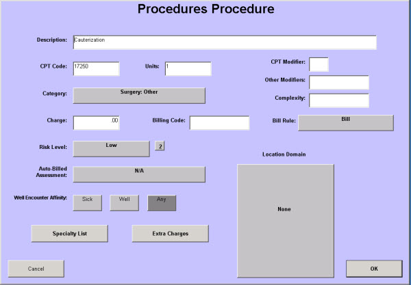

|
Description
Use this screen to add new procedures to the database or to modify the information for an existing procedure. This screen holds the billing information for a procedure.
While there are several types of procedures available in EncounterPRO, we recommend that you only add the following types:
- Perform Procedures
- Collect Procedures
These will cover most of your labs, tests, and radiology procedures. Contact EHR Product Support if you need to add or update the other procedure types.
Each Perform Procedure should have a corresponding Collect Procedure. After you have added the perform and collect procedures, you must link them together on the Observation screen.
Before you add a procedure to the database, you should perform a thorough search of the database to confirm that it does not already exist.
How to Access This Screen
Access this screen by:
- Selecting Procedures on the Configuration List from the Office View, then selecting New Procedure
- Selecting Procedures on the Configuration List from the Office View, then selecting a specific procedure and Edit Procedure from the menu
Screen Example

Want to Learn More?
Related Solutions
Concept: Procedures
How to: Add a New Procedure
How to: Modify an Existing Procedure
How to: Add Patient Send Out Options to Collect Procedures
How to: Modify Billing for a Lab or Test
|